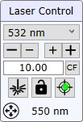
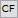
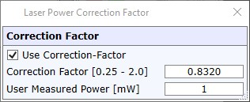
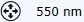

|
激光控制
|
可以使用以下用户界面控制激光。如果有 TruePower 激光，还可以使用激光强度和快门。

激光选择（组合框）
可在此处切换多个激光。更改效果：
如果有多个光谱仪，上次使用的激光将自动为当前光谱仪选中。
激光强度（按钮和编辑框）
可以通过按下 - 或 + 按钮或输入毫瓦为单位的强度值并按 <enter> 来更改激光功率。实际达到的值可能与输入的数字略有不同。
如果无法达到该值，软件将显示错误。请确保激光已打开并预热。

激光功率校正因子可定义一个校正因子来校正光纤中测得的激光强度与样品上的强度之间的差异。
要启用激光功率校正因子，请在主菜单（高级）中打开校正因子按钮的可见性。

输入用户测量的功率以自动计算校正因子。
激光快门（切换按钮）
按下激光按钮以打开或关闭激光快门。
激光快门锁定（切换按钮）
如果选中此按钮，软件不会自动更改激光快门状态（例如切换到拉曼或视频状态时）。
此选项仅适用于 AFM 配置。
激光输出调整（切换按钮）
打开 激光输出调整窗口。
根据硬件，可以在此处调整光纤中的激光输出或启动自动校准。
仅在配置了自动激光输出调整单元时可用。
激光光纤调整
要进行激光光纤调整，请使用服务监视器中的 真实功率激光工具。

拉曼/荧光分辨率
显示当前所选激光和物镜的估计光学分辨率。
单击此元素可在横向 和轴向 分辨率显示之间切换。